PASSWORD & CARD SECURITY ─ 2026.10
そのパスワード、
漏れているかも
ニュースから学ぶ、個人の守り方
初心者向け・約8分
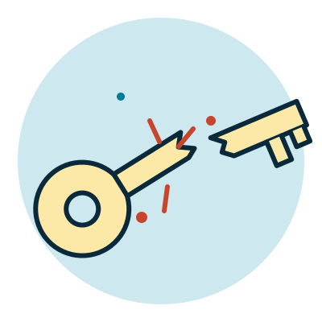
ニュース
パスワードを含む会員情報が流出の可能性
ソースネクスト 2026年10月15日公表
2,252万件
漏れた可能性がある情報：メールアドレス、パスワード、氏名、住所など（人によって項目は異なります）。カード情報は対象外と発表されています。
ことば「流出」＝情報が外に漏れること。「可能性」＝漏れたかもしれない件数、という意味です。
出典: ScanNetSecurity(2026-10-20)ほか報道。件数は「可能性」
なぜ危ない？
漏れたパスワードは、他のサイトで試される
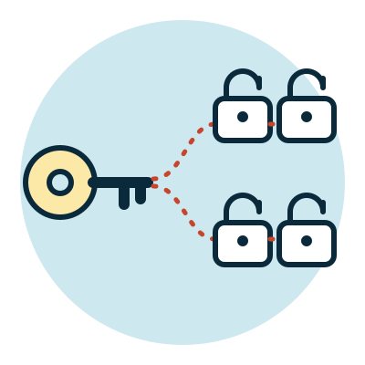
1悪者が、漏れた「メールアドレス＋パスワード」を手に入れる
2別の通販・SNS・決済サービスで、同じ組み合わせを次々に試す
3同じパスワードを使っていると、ログインされてしまう
ことば「使い回し」＝複数のサービスで同じパスワードを使うこと。この手口を「パスワードリスト攻撃」と呼びます。
出典: レポート第2章
手口
「フィッシング」＝偽サイトでだまし取る詐欺
1「本人確認が必要です」などの偽メール・SMSが届く
2リンクを開くと、本物そっくりの偽サイトが出る
3ID・パスワード・カード番号・認証コードを自分で入力して渡してしまう
出典: 警察庁2025年統計の報道(2026-03)。不正送金は約103.97億円
カード
カードも、偽サイトで番号を盗まれる
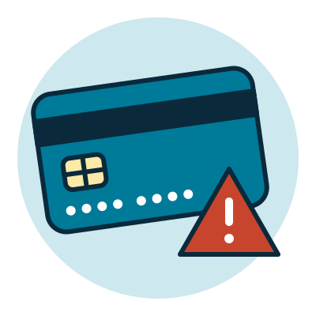
不正利用のうち、フィッシングが原因と推計される割合
75%
2025年のカード不正利用は510.5億円。2026年4〜6月の107.7億円のうち100.1億円は「番号盗用」（盗まれたカード番号をネットで使われる被害）です。
ことば「推計」＝正確に数えた数ではなく、見積もった数字のことです。
出典: 日本クレジット協会・日本クレジットカード協会（報道）
基本
ログインは「本人確認」。材料は3種類
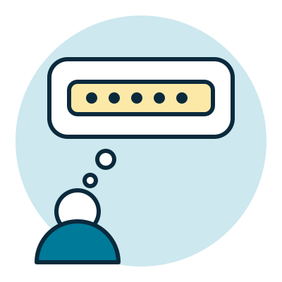
知っているもの
パスワード・暗証番号（PIN）
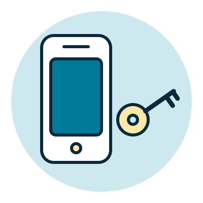
持っているもの
スマホ・セキュリティキー
種類の違うものを2つ以上組み合わせるほど、突破されにくくなります。次から、3つの方式を順に見ていきます。
ことば二段階認証＝確認が2回あること。二要素認証＝種類の違う2つで確認すること。パスワードのあとに暗証番号を足しても、どちらも「知っているもの」なので二要素にはなりません。
出典: レポート第3章（NIST SP 800-63B-4）
方式 1 パスワード
パスワード：知っている文字列で確認する
仕組み
1 あなたが文字列を入力する
▼
2 サービスが、計算で「変換した値（ハッシュ値）」を作る
▼
3 保存済みの値と同じなら、本人とみなす
特徴と弱点
- 手軽で、ほとんどのサービスで使える
- 使い回すと、1か所の漏洩が全体に広がる
- 短い・よくある文字列は、推測されやすい
- 漏れた「変換した値」も、候補を大量に試して当てられることがある
- 偽サイトに入力すると、そのまま渡してしまう
守り方サービスごとに別の16文字以上（目安）を、管理アプリに作らせる。管理アプリ＝パスワードを作って覚えてくれるアプリ（例：Googleパスワードマネージャー）。
出典: レポート第2・8章。16文字は本レポートの目安で、安全の保証ではありません
方式 2 二段階認証
二段階認証：パスワード＋もう1回の確認
パスワードのあと、もう1つ別の方法で確認。使わないより安全性が上がります。
SMSコード
仕組み
電話番号に届く数字を入力する
注意
電話番号の乗っ取りに注意
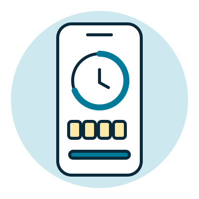
認証アプリ
仕組み
30秒ごとに数字が入れ替わる
注意
最初のQRコードは流出に注意
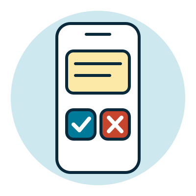
承認通知
仕組み
スマホの通知で「承認」を押す
注意
身に覚えのない承認はしない
出典: レポート第3章（NIST SP 800-63B-4、RFC 6238）
方式 2 弱点
コードも、偽サイトに渡すと突破される
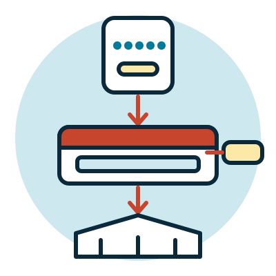
1偽サイトに、IDとパスワードを入力する
2本物のサイトが、あなたのスマホにコードを送る
3あなたが、そのコードも偽サイトに入力する
4犯人がコードをすぐ本物に転送し、ログインされる
ことば「リアルタイムフィッシング」＝入力した内容を、その場で本物のサイトへ中継する手口。コードが約30秒で変わっても防げません。
出典: レポート第3章、日本証券業協会の注意喚起
方式 3 パスキー
パスキー：鍵のペアで本人確認する
1本物のサービスが、今回だけの確認データを送る
2端末が、そのサービス用のパスキーを選ぶ
3指紋・顔・PINで「使っていい」と許可する
4秘密鍵で確認データに署名して返す
5サービスが公開鍵で確かめて、ログイン
ことば秘密鍵＝端末の中に隠しておく鍵（外に出さない）。公開鍵＝サービスに預ける、確認専用の鍵。パスワードも秘密鍵も、ネットには流れません。
出典: レポート第4章 [11][15][17][18]
方式 3 特徴
パスキーは、なぜ偽サイトに強い？
合鍵のたとえ：本物のサービスの「錠前」には、あなたの端末の鍵しか合いません。偽サイトは別のドメイン（ネット上の住所）なので、鍵が使えません。
強いところ
- パスワードを入力しない
- 使い回しが起きない
- 偽サイトにだまされにくい
- 指紋・顔のデータは送られない
気をつけること
- 端末の画面ロックPINを知られない
- 「別の方法でログイン」の誘導に乗らない
- 保存先のアカウントを守る
- なくした時の復旧手段を用意する
出典: レポート第4章 [15][17]
3つの方式を比べると
| 方式 | 確認に使うもの | 偽サイトへの強さ | 残る弱点 |
|---|
| パスワードだけ | 知っている文字列 | 守れない | 入力の盗難・使い回し・推測 |
| ＋SMSコード | 文字列＋SMSで届くコード | コードを中継されうる | 電話番号の乗っ取り |
| ＋認証アプリ | 文字列＋アプリのコード | コードを中継されうる | 最初の秘密の流出 |
| ＋承認通知 | 文字列＋登録した端末 | 誤承認・誘導が残る | 連続通知・操作の取り違え |
| パスキー | 端末内の鍵＋指紋・顔・PIN | 強い | 端末・保存先・復旧経路の侵害 |
二段階認証にも、使わないより意味があります。主要メールや金融は、使えるならパスキーへ。
出典: レポート第3章の表、第10章
落とし穴
保存先のアカウントが破られたら？
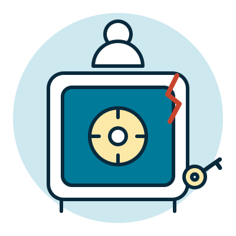
パスキーはGoogleやAppleのアカウントに保存され、他の端末とも共有（同期）できます。便利ですが、そのアカウントを乗っ取られると悪用される恐れがあります。
↑ 各社がこの点を注意喚起しています
ことば「同期」＝別のスマホやパソコンでも使えるように、同じ情報を共有すること。守るべきはアカウントそのものです。
出典: SBI証券(2026-10-02)・SMBC日興証券(2026-10-06)、レポート第5章
備え
スマホをなくしても入れる「予備」を
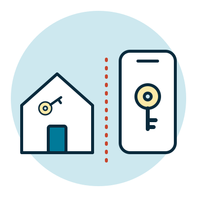
1別の鍵（セキュリティキー）や予備のパスキーを登録する
2使えるサービスは、バックアップコードを安全に保管する
3再設定用のメール・電話番号を最新にしておく
4予備は、普段のスマホと別の場所に置く
ことば「バックアップコード」＝一度だけ使える、ログイン用の予備の数字。同じアカウントに同期した2台だけでは、アカウントに入れなくなった時に備え切れません。
出典: レポート第5・11章
お金を守る
お金は「通知」と「公式の入口」で守る
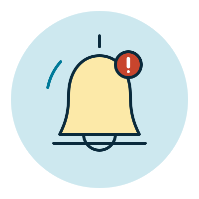
1ログイン・取引・出金の通知をオンにする
2メール・SMSのリンクは開かず、公式アプリやブックマークから入る
3使わないサービスのカード情報・本人確認書類は残さない
4明細を月1回など確認する発表者の提案
注意「漏洩しました」を口実にした偽のパスワード再設定メールもあります。連絡は必ず公式の入口から確かめます。
出典: レポート第8・9章（4は一般的な助言として発表者が追加）
Google
Googleの「高度な保護機能」とは
1新しい端末では、パスキーかセキュリティキーが必須
2メールやドライブに入る外部アプリを制限
3不審なダウンロードのチェックと、復旧の本人確認を強化
Googleアカウントの保護をまとめて強くする無料のプログラム。記者・活動家・経営者など狙われやすい人向けですが、一般の人も使えます。
注意ログイン済みの端末で毎回鍵を求める、という意味ではありません。
出典: レポート第6章 [22][23][24]（公式ページとの照合は未了）
Google
使う前に知っておくこと
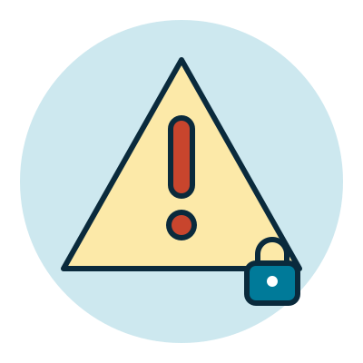
1回復手段を先に用意する（登録時に必要）
2鍵を失うと締め出される恐れ。復旧に数日かかることも
3古いメールアプリや自作スクリプトが使えなくなることも
4会社・学校のアカウントは、管理者のルールに従う
強くすることと、自分が戻れることは両立が必要です。
出典: レポート第6章 [23][24]
実演
では、実際に
見てみましょう
1アカウントのセキュリティ設定を点検する
2パスワードを入力せず、パスキーでログインする
3高度な保護機能の画面を見る（登録の手前で止める）
今夜やる
今夜やる3つ
1主要メールとGoogle・Appleのアカウントに、パスキーか二段階認証を設定。使い回しをやめる
2スマホの画面ロックを強くし、OS・アプリを更新する
3予備のログイン手段を、普段のスマホと別の場所に用意する
全部を一度にやらなくて大丈夫。まずは1から始めましょう。
出典: レポート「先に実行するなら」「今日確認する項目」
付録 1
疑ったときの最初の一手
1 お金を止める
連絡
カード会社・金融機関に停止を相談する
2 入口を守る
変更
主要メールと保存先のパスワードを変え、全端末をログアウト
3 残った入口を消す
取消
知らない鍵・転送設定・外部連携を取り消す
パスワードを変えるだけでは、侵入後に作られた入口が残ることがあります。
出典: レポート第9章 [01][04][29]
付録 2
ことばの辞典
- フィッシング
- 本物そっくりの偽サイト・偽メールで、情報をだまし取る詐欺
- 使い回し
- 複数のサービスで同じパスワードを使うこと
- 二段階認証
- パスワードのあとに、もう1回確認する仕組み
- パスキー
- パスワードの代わりに、端末の鍵と指紋・顔・PINでログインする仕組み
- 同期
- 別のスマホやパソコンでも使えるよう、情報を共有すること
- 管理アプリ
- パスワードを作り、覚えて、入力まで手伝ってくれるアプリ
出典: レポート第2〜5章
付録 3
実演の流れ（約3分）
STEP 1
設定を点検
端末・鍵・復旧手段を確認する
STEP 2
鍵でログイン
パスワードを入力せず、指紋やPINで
STEP 3
要件を読む
高度な保護機能の条件と制約を見る
STEP 4
手前で止める
登録せず「今夜やる3つ」を伝える
付録 4
出典と確認状況（2026-10-29 更新）
レポート「パスワード 二段階認証 パスキー 個人情報漏洩への備え」第1〜11章と出典[01]〜[33]
ソースネクスト 22,519,960件（可能性） ScanNetSecurity 2026-10-20／@IT 2026-10-17
警察庁統計 2025年 約103.97億円・245万4,297件 報道（2026-03-12）
カード不正利用 2025年 510.5億円／2026年4〜6月 107.7億円 日本クレジット協会ほか（報道）
証券各社の注意喚起 SBI証券 2026-10-02／SMBC日興証券 2026-10-06（検索で確認）
未確認 Google公式ページの文言照合／三菱UFJモルガン・スタンレー証券 10/16・IPA個人向け 10/26（レポート記載のみ・未使用）
数値は報道ベースで、公式発表で更新されることがあります